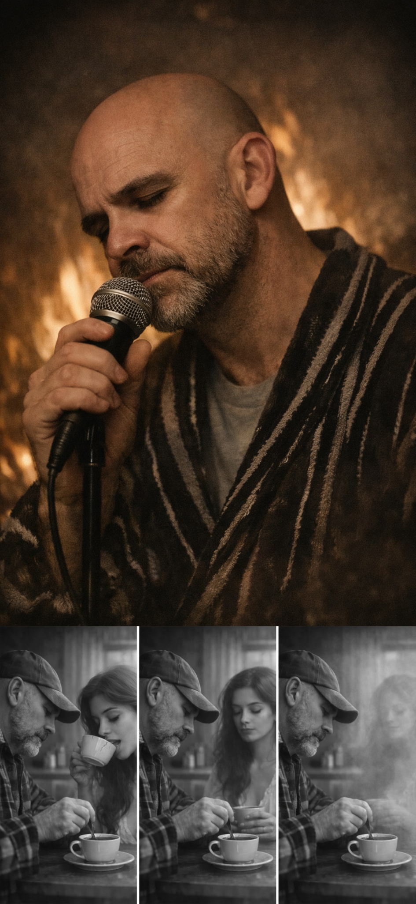

New era page
A Good Day for Standing Still
A small doorway into the songs. One click to listen, one click to see the world around them.
Indie songwriter
Cinematic voice
Studio made
Santa Cruz, CA
Music
Latest demo
Drop a Spotify or YouTube embed here later. For now this is a local demo video in your repo.

Collector objects
No merch yet, so this becomes your equivalent. Posters, lyric cards, and era visuals.
Think limited prints, not a store.
Visuals

Scene studies
A place for stills, AI cinematics, and video experiments tied to each song.

Triptych set
Use these as rotating hero variants, social posts, or a mini visual story.
Stories
Studio journal
This replaces touring. Short posts about writing, voice, production, and the moments behind each lyric.
Keep it simple: one paragraph, one photo, one link.